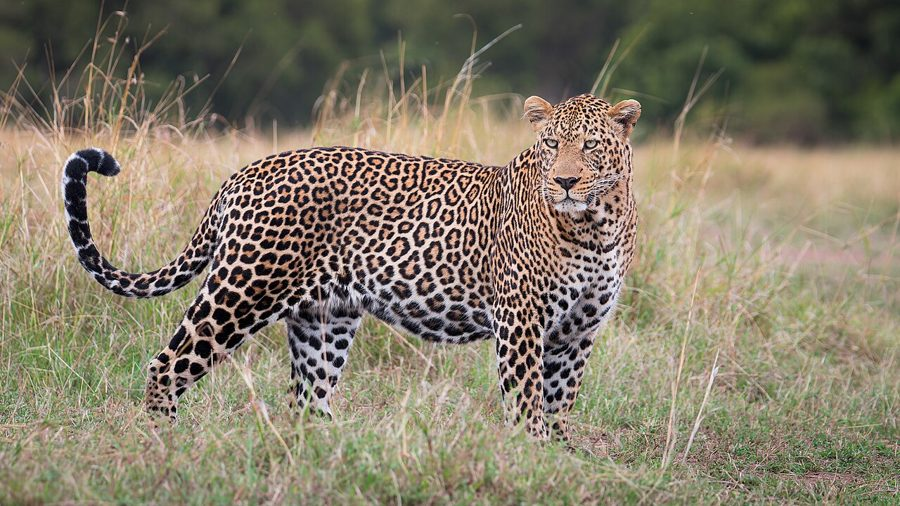

तेंदुआLeopard
Panthera pardus · Felidae · MAM-0034

- Scientific name वैज्ञानिक नाम
- Panthera pardus (Linnaeus, 1758)
- Family कुल
- Felidae
- Hindi हिंदी
- तेंदुआ
- Local names स्थानीय नाम
- tendwa, chita, chita-bagh, leopard, panther
- Status here यहाँ की स्थिति
- native
- Movement आवागमन
- Resident, here all year
- Known from कहाँ दर्ज
- Others have published records from the wider Awadh–Purvanchal plain, none yet from Basti–Ayodhya अवध–पूर्वांचल से दूसरों के प्रकाशित अभिलेख, बस्ती–अयोध्या से अभी नहीं
- IUCN IUCN
- VU
- Review समीक्षा
- not yet reviewed
When to look कब देखें
Present all year. साल भर मौजूद।
Tell it apart from इनसे अलग पहचानें
तेंदुआ / Leopard
Panthera pardus (Linnaeus, 1758) — Felidae
तेंदुआ — भारतीय जंगलों का एक अत्यंत फुर्तीला, गुप्त और अनुकूलनशील बड़ा शिकारी जानवर है, जो घने जंगलों से लेकर कंटीली झाड़ियों और गन्ने के खेतों तक विभिन्न आवासों में सहजता से रह सकता है। इसका सुनहरा-पीला शरीर काले छल्लों (रोसेट्स) से ढका होता है। यह पेड़ों पर बहुत तेजी से चढ़ने और भारी शिकार को अपने मुंह में दबाकर डालियों पर ले जाने में माहिर है। बाघ की तुलना में आकार में छोटा होने के बावजूद यह अत्यधिक चालाक और धैर्यवान शिकारी है जो छोटे हिरणों, जंगली सूअरों और बंदरों का शिकार करता है।
Quick Identification त्वरित पहचान
| Feature | Description |
|---|---|
| Habit | Highly agile, secretive large felid frequenting forest, scrub, and agricultural edges |
| Pelage | Pale yellow to rich golden-tawny ground colour densely marked with black rosettes |
| Rosettes | Circular or polygonal clusters of small black spots enclosing a darker buff centre |
| Underparts | White on throat, breast, belly, and inner limbs, marked with solid black spots |
| Tail | Long, slender, spotted above with a white underside and black tip |
| Head Marks | Solid black spots on forehead, cheeks, and muzzle; rounded ears with black back |
| Demeanour | Fluid, silent, low-slung stalking gait; readily hauls prey into tree forks |
Field tip: Look along sandy nullahs and forest tracks for medium-sized rounded pugmarks, or scan horizontal branches of large fig and sal trees. The pale golden coat densely covered in dark rose-like rosettes and the exceptional tree-climbing habit distinguish the Leopard from all other regional predators.
हिंदी:
इसका शरीर सुनहरे-पीले रंग का होता है जिस पर गुलाब के फूल जैसे काले छल्ले (रोसेट) बने होते हैं।
यह पेड़ों पर बहुत आसानी से चढ़ जाता है और अक्सर डालियों पर लेटकर आराम करता है।
इसके पंजों के निशान बाघ से काफी छोटे होते हैं और नाखूनों के निशान नहीं दिखते।
Morphology आकारिकी
Measurements as given by Blanford (1891 as Felis pardus):
| Measurement | Range |
|---|---|
| Height at shoulder | about 2 feet (Blanford 1891) |
The Leopard is an extraordinarily lithe and powerfully muscled large cat with relatively short, stout legs and a long body. The skull is robust with heavily constructed zygomatic arches and long, razor-sharp canine teeth adapted for delivering fatal throat bites.
The dorsal ground colour varies from pale cream or light straw-yellow in arid scrub to rich warm golden-tawny or yellowish-rufous in moist sal forests. The neck, back, flanks, and thighs are densely patterned with circular, rosette-shaped markings composed of small black spots enclosing an unspotted core that is slightly darker than the surrounding ground tone.
The head, lower legs, and paws bear solid, simple black spots. The throat, chest, belly, and inside of the limbs are pure white with scattered large black blotches. The ears are short, rounded, jet-black on the posterior surface with a prominent white central patch. The iris varies from pale golden-yellow to greenish-grey.
Vocalisations. The characteristic territorial call is a harsh, repetitive, raspy sawing sound, likened to wood being cut with a coarse hand-saw. When startled or aggressive, it produces explosive coughing grunts and deep spitting snarls.
हिंदी:
कंधे पर इसकी ऊंचाई लगभग 2 फीट होती है।
इसकी लंबी पूंछ शरीर का संतुलन बनाए रखने में मदद करती है जब यह पेड़ों पर छलांग लगाता है।
इसकी आवाज लकड़ी चीरने वाली आरी जैसी सुनाई देती है जिसे 'सॉइंग' कहते हैं।
Behaviour & Ecology व्यवहार और पारिस्थितिकी
Panthera pardus is an exceptionally versatile and solitary hunter. While primarily nocturnal and crepuscular, it frequently hunts by day in undisturbed reserves. It excels at stalking through low scrub, creeping flat against the earth until it can launch a short, blistering sprint.
A supreme climber, the Leopard routinely hoists heavy ungulate carcasses into high forks of trees to protect them from terrestrial scavengers like jackals, hyenas, and competing tigers. Where sympatric with the larger Tiger, it avoids direct competition by hunting smaller prey, moving into rugged broken terrain, and utilizing tree canopies.
हिंदी:
यह बहुत चालाक शिकारी है जो झाड़ियों में जमीन से सटकर रेंगता हुआ शिकार के करीब पहुंचता है।
यह अपने शिकार को जमीन से उठाकर ऊंचे पेड़ की डाल पर ले जाकर सुरक्षित रख देता है।
Life Cycle / Phenology जीवन चक्र
Blanford (1888, pp. 70–71) records that the young are born about February or March in the Peninsula of India, and that young leopards probably take about the same time as a tiger to arrive at full growth.
हिंदी:
ब्लैनफोर्ड (1888, पृ. 70–71) के अनुसार प्रायद्वीपीय भारत में बच्चे फरवरी या मार्च के आसपास पैदा होते हैं।
शावक पूर्ण वयस्क होने में संभवतः बाघ के बराबर समय लेते हैं।
Host Plants or Prey आहार
The Leopard possesses an exceptionally broad prey spectrum, hunting everything from small rodents to large ungulates:
- Spotted Deer (Axis axis) and young Sambar (Rusa unicolor)
- Barking Deer (Muntiacus muntjak) and Wild Boar piglets (Sus scrofa)
- Rhesus Macaques (Macaca mulatta) and Gray Langurs (Semnopithecus entellus)
- Indian Peafowl (Pavo cristatus) and Indian Hares (Lepus nigricollis)
- Domestic dogs, goats, and young livestock along village boundaries
It adapts its diet fluidly to local prey abundance, taking advantage of vegetative cover to stalk and surprise prey.
हिंदी:
यह चीतल, काकड़, जंगली सूअर के बच्चे, लंगूर और मोर का शिकार करता है।
जंगल के किनारे के गांवों में यह बकरियों और कुत्तों को भी आसानी से पकड़ लेता है।
Predators / Natural Enemies शत्रु
Tigers kill leopards in territorial disputes over food. No source opened for this atlas names an habitual predator of an adult leopard.
हिंदी:
बाघ भोजन के विवाद में तेंदुए को मार सकता है। इस एटलस के लिए देखे गए किसी स्रोत में वयस्क तेंदुए के किसी नियमित शिकारी का नाम दर्ज नहीं है।
Agricultural / Human Relevance कृषि प्रासंगिकता
The Leopard is a carnivorous predator, feeding on deer, wild pigs, monkeys, and smaller mammals (Blanford 1891, p. 69). It is protected under the Wildlife (Protection) Act, 1972.
हिंदी:
तेंदुआ एक मांसाहारी शिकारी है, जो हिरणों, जंगली सूअरों, बंदरों और छोटे स्तनधारियों का शिकार करता है (ब्लैनफोर्ड 1891)। यह वन्यजीव (संरक्षण) अधिनियम, 1972 के तहत संरक्षित है।
Expected Locally स्थानीय रूप से अपेक्षित
Not a field record. Written from published accounts for eastern Uttar Pradesh. No confirmed local sighting yet — if you have seen it, that is what the atlas needs.
अभी तक स्थानीय पुष्टि नहीं। यह विवरण प्रकाशित स्रोतों से है, किसी अवलोकन से नहीं।
Look along rocky outcrops, scrub ravines, and sal forest edges in the Terai. GBIF holds published records from the wider Awadh–Purvanchal plain, none yet from Basti–Ayodhya; regional specimen data comprise two recent iNaturalist photographic records and two historical museum skins collected in 1926–27 from Kheri district preserved at the Field Museum of Natural History (FMNH).
A first record would be a photograph of the animal with place and date, sent through the About page.
Distribution वितरण
Global range: Widespread across sub-Saharan Africa, the Middle East, South Asia, Southeast Asia, and the Russian Far East, though heavily fragmented.
Regional status: Resident in protected sal forests and foothill tracts of northern Uttar Pradesh, including Lakhimpur Kheri, Bahraich, Balrampur, Shravasti, and Maharajganj districts.
हिंदी:
यह अफ्रीका और एशिया के विभिन्न जंगलों, पहाड़ों और झाड़ीदार इलाकों में पाया जाता है।
Research Questions शोध प्रश्न
- How do leopards utilize sugarcane fields as functional movement corridors between fragmented Terai forest reserves? / गन्ने के खेतों का उपयोग तेंदुए जंगलों के बीच आने-जाने के रास्ते के रूप में कैसे करते हैं?
- What degree of dietary overlap occurs between Panthera pardus and Panthera tigris in areas where both carnivores coexist? / एक ही इलाके में रहते हुए बाघ और तेंदुए के शिकार में कितना अंतर होता है?
- What environmental factors trigger leopard movements into peripheral human-dominated village settlements?
- How do camera trap detection probabilities differ between arboreal perches and ground trails in moist deciduous forests?
- Can community reporting networks using mobile photographs help reduce retaliatory snaring incidents on forest borders? (Pugmark photos can verify leopard presence quickly.)
Similar Species मिलती-जुलती प्रजातियाँ
| Species | How to tell apart | हिंदी | |
|---|---|---|---|
| [[tiger\ | Tiger]] (Panthera tigris) | Substantially larger; reddish-orange coat with bold vertical black stripes (not rosettes); does not haul prey into trees | बाघ |
| [[jungle_cat\ | Jungle Cat]] (Felis chaus) | Far smaller; sandy-brown uniform coat without rosettes; long legs; ears tipped with short black hair tufts | जंगली बिल्ली |
Field rule: The medium-to-large feline build, rich golden-yellow coat densely patterned with black rose-like rosettes, and white ear-spots identify the Leopard with certainty.
हिंदी:
बाघ बहुत बड़ा होता है और उस पर धारियां होती हैं; जंगली बिल्ली बहुत छोटी होती है और उस पर कोई छल्ले नहीं होते।
Taxonomy & Classification वर्गीकरण
Original description. Described by Carl Linnaeus in 1758 in the 10th edition of Systema Naturae (vol. 1, p. 41), under the basionym Felis pardus. Formerly treated under Felis pardus by Blanford (1891) and Panthera pardus by Pocock (1939).
Subspecies. Populations across the Indian subcontinent belong to the Indian leopard subspecies Panthera pardus fusca (Meyer, 1794).
Family and order placement. Order Carnivora; family Felidae (cats); subfamily Pantherinae.
IUCN status rationale. Evaluated as Vulnerable (VU) by the IUCN Red List due to widespread habitat fragmentation, illegal poaching for skins and body parts, and extensive human conflict throughout its range.
हिंदी:
लिनिअस ने 1758 में इसका वर्णन किया था। यह फेलिडे कुल का सदस्य है और वैश्विक स्तर पर सुभेद्य (VU) माना जाता है।
Photo Gallery फोटो गैलरी
No photos yet — add field photos to media/species/leopard/ and run node scripts/sync_photos.js.
Photos needed आवश्यक फोटो
- [ ] Adult leopard resting on horizontal tree bough (पेड़ की डाल पर आराम करता वयस्क तेंदुआ)
- [ ] Camera trap photograph of individual showing flank rosette pattern (छल्ले दिखाता हुआ रात्रि चित्र)
References संदर्भ
- Linnaeus, C. (1758). Systema Naturae per Regna Tria Naturae, ed. 10, vol. 1. Laurentii Salvii, Holmiae, p. 41 (as Felis pardus).
- Blanford, W. T. (1891). The Fauna of British India, Including Ceylon and Burma. Mammalia. Taylor & Francis, London, p. 67 (as Felis pardus).
- Pocock, R. I. (1939). The Fauna of British India, Including Ceylon and Burma. Mammalia. Vol. 1. Taylor & Francis, London, p. 222 (as Panthera pardus).
- Menon, V. (2014). Indian Mammals: A Field Guide. Hachette India, Gurgaon.
- Stein, A. B. et al. (2020). Panthera pardus. The IUCN Red List of Threatened Species 2020: e.T15954A163991139.
- GBIF Occurrence Data — Panthera pardus (Linnaeus, 1758), India (2025).
Source file: species/fauna/mammals/leopard.md